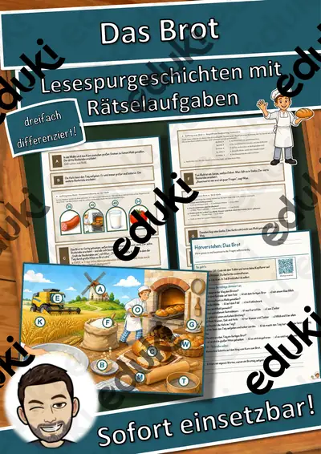
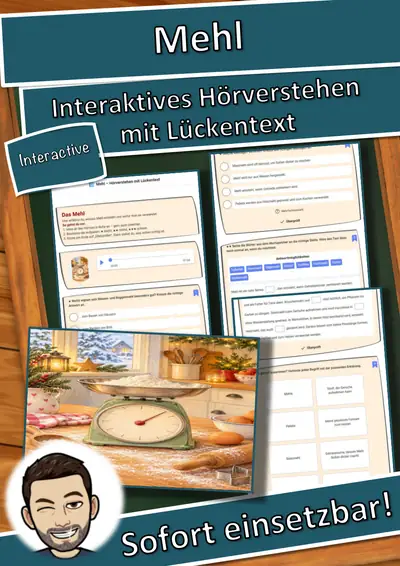

Die Mühle – Lesespurgeschichte mit Rätselaufgaben (Klasse 4)
Begib dich mit deiner Klasse auf eine spannende Lesespur zu einer alten Wassermühle! Die Kinder begleiten Lena und Jonas und den jungen Müllerjungen Jakob Schritt für Schritt auf dem Weg vom Korn zum Mehl – vom Kornfeld über den Erntewagen, den Mühlteich, das Wasserrad, das Mahlwerk und das Mehlsieb bis zur Waage und zum Marktstand. Am Ende jedes Abschnitts verrät ein Hinweis den nächsten Ort auf dem Übersichtsplan – nur wer richtig liest und mitdenkt, findet den Weg und sammelt alle geheimen Buchstaben zum Lösungswort.
Diese Lesespurgeschichte verbindet motivierendes, sinnentnehmendes Lesen mit echtem Sachwissen rund um die Wassermühle und den Weg vom Korn zum Brot und schult zugleich das genaue Arbeiten. Das Material ist SOFORT EINSETZBAR und in DREI DIFFERENZIERUNGSSTUFEN (leicht ★ / mittel ★★ / schwer ★★★) angelegt, sodass alle Kinder einer Klasse am selben Thema arbeiten können.WICHTIG: Das komplette Material ist sowohl in FARBE als auch in SCHWARZ-WEISS enthalten – ideal zum Sparen von Druckkosten.DAS IST ENTHALTEN
- Lesespurgeschichte in 3 Niveaus (leicht, mittel, schwer)
- farbiger Übersichtsplan als Suchkarte
- Hörverstehen mit QR-Code zur MP3 (Kinder hören selbstständig mit Kopfhörern)
- vier Aufträge auf dem Weg: ein Verbinde-Rätsel, ein Sach-Quiz, eine Rechenaufgabe und ein Steckbrief
- Rätselseite (Wörter-Suchsel + Wissensfragen)
- Ausmalbild zum Thema (Wassermühle mit Mehlsack)
- ausführliches Lösungsblatt für die Lehrkraft
- alles zusätzlich als komplette Schwarz-Weiß-VarianteSO FUNKTIONIERT DIE LESESPURDie Kinder lesen ab START, entnehmen dem Text einen Hinweis auf einen Ort, suchen ihn auf dem Plan und lesen beim dort abgebildeten Buchstaben weiter. Eingebaute Sackgassen dienen der Selbstkontrolle. Am Ende werden die gesammelten Buchstaben umgestellt und ergeben ein geheimes Lösungswort. (Die Lösungen sind selbstverständlich nur im Lösungsblatt für die Lehrkraft enthalten.)INHALTLICHER SCHWERPUNKTDer Weg vom Korn zum Mehl an einer alten Wassermühle: das Kornfeld, die Ernte, der Erntewagen, der Mühlteich mit dem aufgestauten Wasser, das Wasserrad, das Mahlwerk mit den Mühlsteinen, das Mehlsieb, die Waage und der Marktstand. Kindgerecht und sachlich richtig dargestellt.ABGEDECKTER LEHRPLAN (Grundschule, Sachunterricht/HSU)
- Sachunterricht / HSU – Arbeit, Technik und früher: den Weg vom Korn zum Mehl und zum Brot kennenlernen, verstehen, wie eine Wassermühle mit Wasserkraft angetrieben wird, alte Handwerksberufe wie den Müller einordnen.
- Deutsch – Lesen: Lesestrategien anwenden, Texten gezielt Informationen entnehmen, sinnentnehmend und selektiv lesen, Schlüsselwörter nutzen; Selbstkontrolle und Lesemotivation durch die Lesespur; Zuhören: einem Sachhörtext konzentriert folgen und Wesentliches entnehmen (Hörverstehen mit MP3).
- Mathematik – einfache Sachaufgaben im Zahlenraum bis 100 (Addition und Subtraktion) rund um die Mühle.
- Fächerübergreifend / Kompetenzen: selbstständiges Arbeiten, genaues Lesen und Prüfen, Konzentration und Ausdauer, kreatives Gestalten (Ausmalbild).
Geeignet für Freiarbeit, Stationenlernen, Vertretungsstunden, Wochenplan und Homeschooling. Grundschule (differenziert einsetzbar in mehreren Jahrgangsstufen).
Ähnliche Materialien

Mühle Lückentext mit Wortspeicher Hörverstehen und Suchsel

Mehl Lückentext mit Wortspeicher Hörverstehen und Suchsel

Das Brot – Vom Korn zum Brot – Lesespurgeschichte mit Rätselaufgaben (Klasse 5)

Mehl – Hörverstehen mit Lückentext (interaktiv)

Waage – Hörverstehen mit Lückentext (interaktiv)

Waage Lückentext mit Wortspeicher Hörverstehen und Suchsel

Ein Winter im Dorf des Mittelalters – Bauern und Grundherr – Lesespurgeschichte mit Rätselaufgaben (Klasse 7)